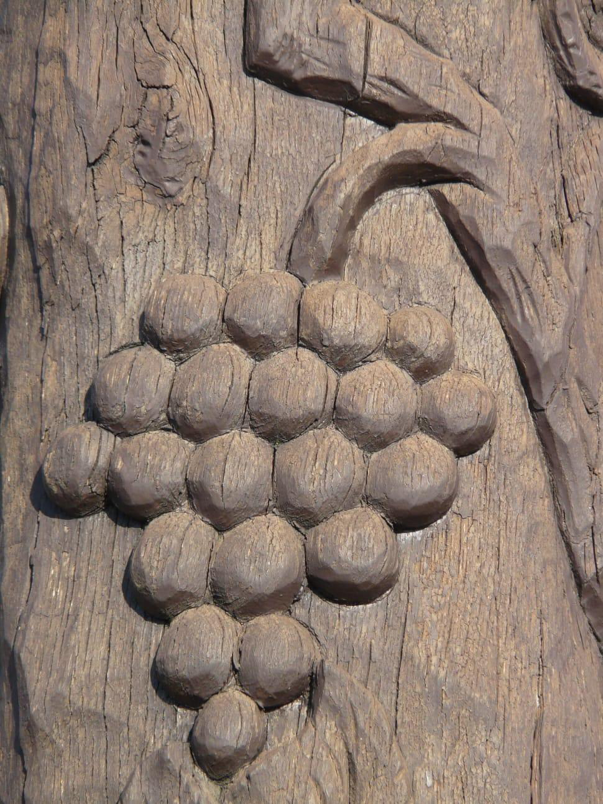

Figure 5.13: Relief wood sculpture
Source: https://www.peakpx.com/454690/brown-grapes-engraved. Retrieved on 9th September 2023

Activity 5.10
Collect various man-made relief objects. Then observe and discuss their relief characteristics.
Exercise: 5.10
1.
Every sculptor creates sculpture the way his/her master taught him/her. Explain two techniques applicable to making sculpture.
2.
There are different techniques for creating sculpture. Explain how a relief sculpture is created.